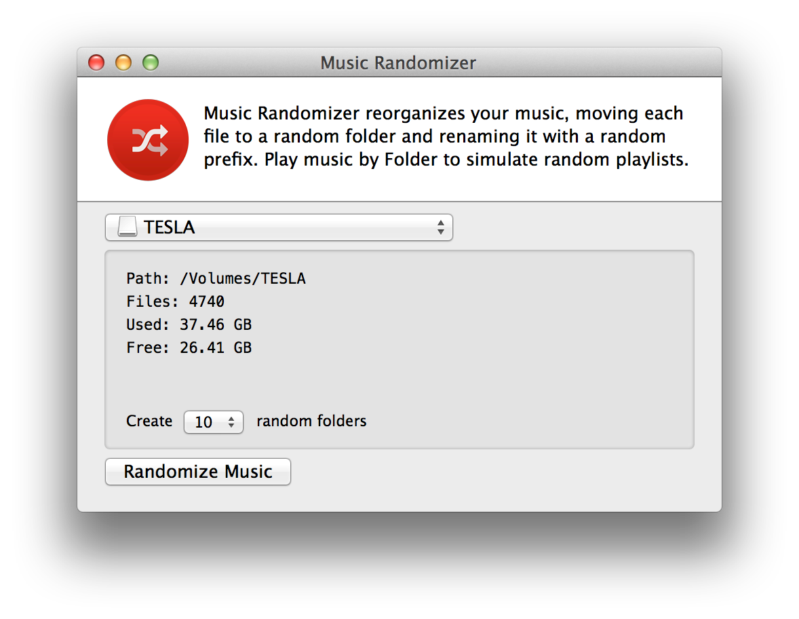

This simple tool shuffles music on your USB drive.
Open the app, locate your drive using the menu, and click Randomize Music.
Don't worry. You will still be able to play music by Artist, Album, etc. and when the folders stop feeling random, you can run it again to create new ones.
Warning: By design, all of the music on your USB drive will be reorganized into random folders. Please backup your music.